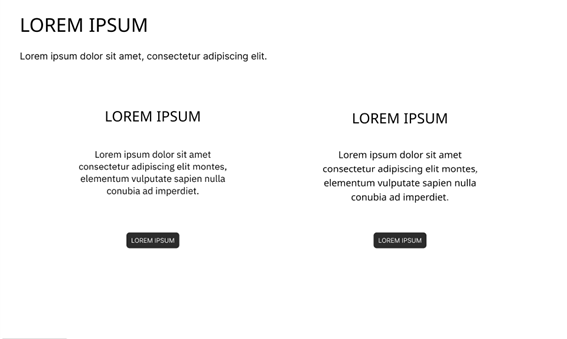
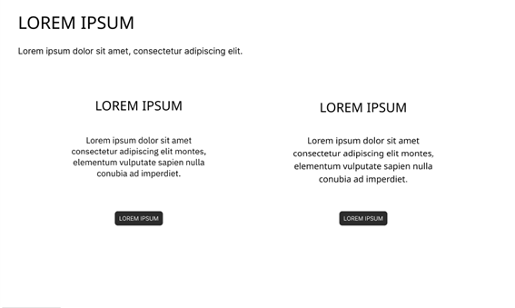
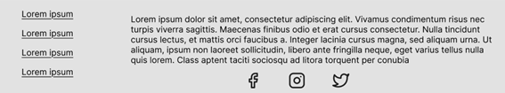
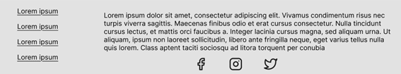
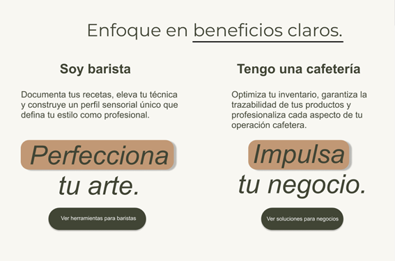
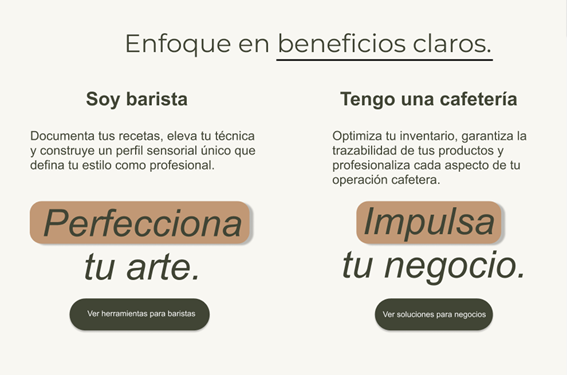
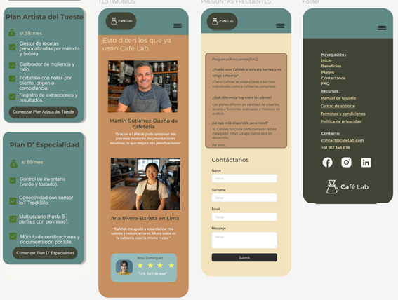
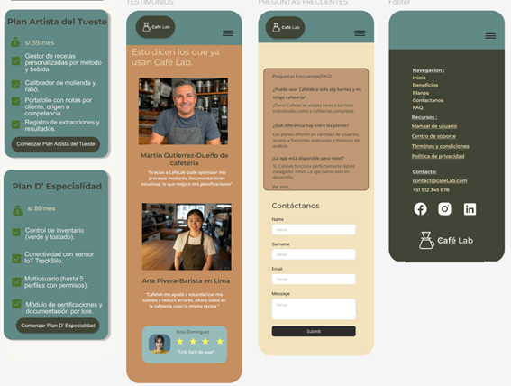

Docente: Efraín Ricardo Bautista Ubillús
Sección: 4307
Ciclo: 2025 - 1
Startup: Café Metrix
Producto: Café Lab
Integrantes del equipo:
| Nombres y Apellidos | Código |
|---|---|
| Henry Kalet Esteban Roman | U202310210 |
| Guillermo Fabián Tantaleán Mesta | U202311958 |
| Adrian Ricardo Donayre Alvarez | U202310187 |
| Christian Fabrizio Inga Orihuela | U20231C111 |
| Carlos Fredy Fernandez Camayo | U202320083 |
| Versión | Fecha | Autores | Descripción |
| TB1 | 26/04/2025 |
|
|
Link de repositorio del reporte: https://github.com/upc-pre-202510-1asi0729-4307-CafeMetrix/cafeLab
Para el desarrollo del informe perteneciente a la entrega TB1, se dividió la implementación de secciones de la siguiente forma para cada integrante del equipo:
| Integrante | Tareas Asignadas |
| Guillermo Tantaleán | |
| Henry Esteban | |
| Adrian Donayre | |
| Christian Inga | |
| Carlos Fernandez |
| Student Outcomes | Acciones realizadas | Conclusiones |
|---|---|---|
| 3.c1. Comunica oralmente con efectividad a diferentes rangos de audiencia |
Guillermo Tantaleán TB1: Henry Esteban TB1: Adrian Donayre TB1: Christian Inga TB1: Carlos Fernandez TB1: |
|
| 3.c2. Comunica por escrito con efectividad a diferentes rangos de audiencia |
Renzo Uribe TB1: Henry Esteban TB1: Adrian Donayre TB1: Christian Inga TB1: Carlos Fernandez TB1: |
En esta sección se brinda la descripción de nuestra startup, producto y miembros de equipo.
Café Metrix es una startup enfocada en desarrollar soluciones tecnológicas para la industria del café de especialidad. Nace de la pasión por combinar tecnología accesible con el arte del café.
Así, nace Café Lab, el cual es un sistema integral diseñado para baristas profesionales y cafeterías de especialidad que busca resolver dos problemas fundamentales en la industria: la falta de herramientas integradas para documentar, replicar y compartir procesos clave del café, y la desarticulación entre el tueste del grano y la experiencia final en taza.
La solución consiste en una plataforma dual que combina software y componentes IoT, proporcionando control total sobre el café desde el grano verde hasta la preparación final. Permite documentar perfiles de tueste, controlar el almacenamiento del café verde, digitalizar procesos de calibración, conectar la forma en que tuestan el café con cómo sabe finalmente (alineando parámetros técnicos del tostado con el perfil en taza) y reforzar la transparencia de la cadena productiva (mostrando de dónde viene el café y cómo se ha procesado en cada etapa).
Misión: Elevar la calidad y consistencia del café, documentando cada etapa del proceso para garantizar resultados excepcionales y sostenibles.
Visión: Ser líder en el estándar tecnológico que revoluciona la industria del café de especialidad.

 |
Mi nombre es Adrian Donayre, tengo 19 años y actualmente estoy cursando el quinto ciclo de la carrera de Ingeniería de Software en la UPC. Tengo habilidad en los lenguajes C++ y javascript. Así mismo, cuento con experiencia en monitoreo de infraestructura en herramientas como Azure, NR y Kemp. Personalmente, opino que lo que hagamos en la universidad se verá reflejado en nuestra vida profesional. Por ello me esfuerzo en ampliar mis conocimientos y conseguir nuevas experiencias que me sumen para seguir mejorando. |
 |
Mi nombre es Guillermo Tantaleán, tengo 18 años y estoy cursando el quinto ciclo de Ingeniería de Software en la UPC. Me apasiona el desarrollo web y de aplicaciones móviles. Tengo habilidades para gestión de proyectos, trabajo en equipo, y ventas. |
 |
Mi nombre es Henry Esteban, tengo 19 años y me encuentro en ing de software. Me considero atractivo a abrir nuevas experiencias y ser mejor persona cada día, me gusta aprender y siempre escucho los buenos consejos |
| Fila 4, Columna 1 | Fila 4, Columna 2 |
| Fila 5, Columna 1 | Fila 5, Columna 2 |
Who (¿Quiénes?):
Baristas profesionales y dueños de cafeterías de especialidad que manejan procesos desde el tueste hasta la preparación, así como emprendedores del rubro que buscan escalar su operación manteniendo la calidad.
What (¿Qué sucede?):
Actualmente utilizan herramientas manuales o genéricas que no permiten documentar ni replicar parámetros técnicos clave, lo que genera inconsistencias en la calidad del café, desconexión entre procesos y pérdida de trazabilidad.
When (¿Cuándo ocurre?):
Cuando se intenta replicar perfiles de tueste, preparar recetas específicas o cumplir con estándares de calidad de forma profesional sin contar con herramientas digitales adaptadas al rubro.
Where (¿Dónde ocurre?):
En laboratorios de café, tostadores pequeños, cafeterías urbanas o rurales y negocios en expansión que buscan formalizar su operación.
Why (¿Por qué es un problema?):
La falta de integración entre los procesos técnicos (almacenamiento, tueste, calibración, cata, extracción) dificulta la estandarización, reduce la calidad percibida y limita la posibilidad de crecer o competir en el mercado de cafés de especialidad.
How (¿Cómo lo solucionan hoy?):
Mediante registros manuales en cuadernos, hojas de Excel, softwares genéricos no adaptados al café, sin conexión entre lotes, recetas y resultados.
How much (¿Cuánto cuesta no resolverlo?):
Genera pérdida de reputación, inconsistencias en la calidad, dificultad para cumplir certificaciones y pérdida de clientes exigentes. Además, impide escalar el negocio con eficiencia.
Nuestro sistema para baristas y cafeterías de especialidad fue diseñado para lograr que los usuarios puedan documentar, replicar y mejorar procesos como el tueste, la preparación y la cata, además de asegurar trazabilidad y control desde el grano verde hasta la taza.
Hemos observado que el producto no está cumpliendo completamente con estos objetivos, ya que los procesos están desarticulados, no hay conexión entre etapas como el almacenamiento, el tueste y la extracción, y muchos datos importantes se pierden o no se registran. Esto provoca errores, variabilidad en la calidad, pérdida de información y poca confianza del cliente final.
¿Cómo podríamos mejorar la plataforma para que los usuarios sean más exitosos mediante una integración real de procesos, alertas en tiempo real sobre el estado del grano, y herramientas que permitan ver y comparar datos técnicos y sensoriales, basándonos en métricas como consistencia en recetas, reducción de pérdidas y mejora en la trazabilidad?
¿Quién es el usuario?
El usuario principal de este producto son baristas profesionales y cafeterías de especialidad. Los baristas profesionales se encargan de gestionar todo el proceso del café, desde la compra del café verde hasta su preparación en taza. Buscan consistencia, calidad y trazabilidad para ofrecer un café superior, ya sea en competencias, consultorías o para clientes exigentes. Por otro lado, las cafeterías de especialidad se enfocan en ofrecer cafés de origen con características únicas y diferenciadas. Estas cafeterías necesitan herramientas para asegurar la calidad del café, cumplir con certificaciones y fidelizar a sus clientes a través de la transparencia y el seguimiento de cada etapa del proceso.
¿Dónde encaja nuestro producto en su vida?
El producto encaja perfectamente en el flujo de trabajo diario de los baristas y las cafeterías, proporcionando una herramienta integral para documentar, estandarizar y optimizar cada uno de los pasos del proceso de preparación del café. Desde el tueste del grano, pasando por la calibración de los molinos, hasta la cata y la preparación final, el producto facilita la replicabilidad de los procesos y mejora la consistencia de la calidad del café. Además, el sistema ayuda a las cafeterías a gestionar la trazabilidad del café, asegurando que cumplan con las normativas de certificación y mantengan un registro detallado desde el origen del grano hasta la taza que llega al cliente.
¿Qué problemas tiene nuestro producto y cómo se pueden resolver?
El primer problema que enfrentan los usuarios es la falta de herramientas integradas para la documentación y replicación de procesos. Muchos baristas y cafeterías trabajan con métodos desarticulados y no tienen una forma eficiente de documentar sus procedimientos. Nuestro producto resuelve esto mediante una plataforma que integra el software, permitiendo a los usuarios documentar y comparar perfiles de tueste, calibración de molinos y catas. El segundo problema es la falta de trazabilidad en los procesos, lo que genera inconsistencias y pérdidas de calidad. La plataforma resuelve esto al ofrecer trazabilidad completa desde el grano verde hasta la taza, asegurando que las variables críticas sean controladas y monitorizadas.
¿Cuándo y cómo se usará nuestro producto?
El producto se utilizará en todo el ciclo de vida del café. Desde la recepción y almacenamiento del café verde hasta el proceso de tueste, calibración, cata y preparación final. Los baristas y administradores de cafeterías utilizarán la plataforma de manera continua en su jornada diaria, ajustando los parámetros de tueste, calibrando los molinos, y evaluando las catas de café. La herramienta será accesible tanto en plataformas web como móviles, lo que permitirá a los usuarios acceder a los datos y realizar ajustes desde cualquier lugar.
¿Qué características son importantes?
Las características clave de nuestro producto incluyen una interfaz intuitiva, que permita a los baristas y administradores navegar y usar la plataforma sin complicaciones. La trazabilidad completa es otra característica esencial, permitiendo que los usuarios rastreen el café desde su origen hasta la taza, asegurando que cada variable crítica sea registrada y controlada. También es crucial que el sistema envíe alertas automáticas sobre el estado del café verde, como cambios en la temperatura o humedad, para prevenir el deterioro del grano. La documentación y comparativa de los diferentes perfiles de tueste y catas permite replicar los procesos exitosos y mejorar la calidad. Además, el producto debe incluir capacitación y soporte, proporcionando guías de uso y recursos educativos para maximizar la efectividad del sistema.
¿Cómo debe verse nuestro producto y cómo debe comportarse?
Visualmente, el producto debe ser claro, moderno y profesional, con un diseño minimalista que facilite la comprensión de los datos. La interfaz debe incluir gráficos fáciles de interpretar y una visualización intuitiva de los diferentes parámetros del proceso de café, como las curvas de tueste, los parámetros de extracción y los perfiles sensoriales. En cuanto a su comportamiento, la plataforma debe ser rápida y confiable, con tiempos de respuesta mínimos para que los usuarios puedan tomar decisiones en tiempo real. Las alertas automáticas deben ser precisas y oportunas, mientras que la navegación debe ser fluida tanto en la aplicación web como móvil. Además, el sistema debe permitir una rápida configuración de los perfiles de tueste, calibraciones y ajustes según las necesidades de cada usuario.
Hypothesis Statement 1:
Creemos que si CaféLab proporciona a baristas y cafeterías una plataforma digital que permita documentar, replicar y compartir procesos clave como el tueste, la calibración del molino, la cata y la preparación.
Sabremos que hemos tenido éxito.
Cuando la consistencia del café mejore en un 40% y la satisfacción del cliente aumente en un 30%.
Hypothesis Statement 2:
Creemos que si CaféLab implementa un módulo que alinee los parámetros técnicos del tueste (como humedad, temperatura de carga y curva de tueste) con el perfil final en taza.
Sabremos que hemos tenido éxito.
Cuando los baristas reduzcan las inconsistencias en la extracción en un 35% y disminuyan las pérdidas de calidad en un 25%.
Hypothesis Statement 3:
Creemos que si CaféLab integra el sensor IoT TrackSilo para monitorear en tiempo real la temperatura (18-22°C) y la humedad (55-65%) del café verde, con alertas tempranas y registro por lote.
Sabremos que hemos tenido éxito.
Cuando los usuarios reduzcan las pérdidas de calidad por mala conservación en un 30% y mejoren los resultados del tueste en un 20%.
| Business Problem | Business Outcomes | Users & Customers | User Benefits |
|---|---|---|---|
| - Baristas y cafeterías carecen de herramientas integradas para documentar, replicar y compartir procesos clave (tueste, calibración, cata, preparación), impidiendo estandarizar y escalar la calidad del café. - No hay conexión técnica documentada entre el tueste y la experiencia en taza; los baristas desconocen variables críticas (humedad, temperatura, curva de tueste), generando inconsistencias y pérdidas de calidad. |
- Incrementar la adopción de CaféLab entre baristas y cafeterías de especialidad. - Reducir pérdidas de calidad mediante mejor control del almacenamiento y procesos. - Aumentar la satisfacción del cliente con consistencia en la calidad del café. - Generar ingresos recurrentes con planes premium ($29 y $59/mes). - Posicionarse como líder en trazabilidad y transparencia en la industria del café. |
- Baristas Profesionales: Gestionan todo el proceso del café, buscan calidad, consistencia y trazabilidad para competencias y clientes exigentes. - Cafeterías de Especialidad: Negocios que ofrecen cafés de origen, priorizan transparencia y sostenibilidad, necesitan cumplir certificaciones. |
- Baristas: Mayor consistencia, mejor reputación, datos técnicos y sensoriales para diferenciarse. - Cafeterías: Fidelización de clientes mediante trazabilidad, cumplimiento de certificaciones, optimización de inventario y procesos. |
| Solution Ideas | Hypothesis Statement | What's the Most Important Thing We Need to Learn First? | What's the Least Amount of Work We Need to Do to Learn the Next Most Important Thing? |
|---|---|---|---|
| - Plataforma dual (software + IoT): - Software con módulos para gestión de café verde, tueste, calibración, cata y administración. - TrackSilo: Sensor IoT para monitorear temperatura (18–22 °C) y humedad (55–65 %) del café verde, con alertas y registro por lote. |
- Si proporcionamos a baristas herramientas para registrar curvas de tueste, entonces mejorarán la consistencia. - Si ofrecemos trazabilidad a cafeterías, entonces cumplirán certificaciones y fidelizarán clientes. - Si integramos TrackSilo, entonces reduciremos pérdidas de calidad. - Si el software es intuitivo, entonces los baristas lo adoptarán. - Si ofrecemos planes premium, entonces los usuarios pagarán $29 o $59/mes. |
- Riesgo: Resistencia a la adopción tecnológica, costo percibido de planes premium, problemas técnicos con TrackSilo. - Validar: Usabilidad, valor percibido y disposición a pagar mediante pruebas con un MVP. |
- Desarrollar un MVP del software y TrackSilo. - Probar con un grupo pequeño de baristas y cafeterías. - Recopilar retroalimentación y ajustar la solución. |
Esta sección describe a los segmentos clave vinculados al dominio del problema en el contexto del café de especialidad, integrando características demográficas y datos estadísticos de respaldo, a fin de contextualizar la necesidad de soluciones tecnológicas específicas para cada perfil de usuario.
El segmento de baristas profesionales está compuesto por individuos altamente capacitados que participan activamente en múltiples etapas del proceso del café, incluyendo la compra de grano verde, su almacenamiento, tueste, molienda y preparación final. Este perfil se caracteriza por un alto nivel de especialización técnica y un enfoque en la excelencia sensorial y la estandarización de procesos.
Demográficamente, según la Specialty Coffee Association (SCA), este grupo suele estar integrado por personas entre los 25 y 40 años, con una creciente presencia de mujeres (aproximadamente el 34% del total de profesionales certificados por la SCA en América Latina, 2022). Se concentran principalmente en zonas urbanas de alto dinamismo cultural y económico, donde el consumo de café de especialidad ha crecido sostenidamente en los últimos años. En países latinoamericanos como México, Colombia y Perú, se estima que el número de baristas certificados ha aumentado entre un 15% y 20% anual desde 2018 (SCA, 2023).
Desde el punto de vista funcional, estos profesionales requieren registrar curvas de tueste con precisión, ajustar perfiles según el tipo de grano y replicar recetas bajo estándares estrictos de control de calidad. Buscan herramientas que refuercen su propuesta de valor mediante el uso de datos técnicos (temperaturas, tiempos, tasas de desarrollo) y sensoriales (puntajes SCA, notas de cata, intensidad aromática), especialmente en contextos competitivos, consultorías o servicios personalizados a clientes exigentes.
La trazabilidad, la consistencia y la capacidad de documentar procesos son aspectos críticos para este grupo, que actúa como actor clave en la profesionalización y tecnificación del sector cafetalero.
El segundo segmento corresponde a administradores y propietarios de cafeterías de especialidad, cuya operación se centra en la oferta de cafés de origen con atributos diferenciados. Este grupo combina un enfoque comercial con una orientación ética hacia la transparencia, la sostenibilidad y la relación directa con productores.
A nivel demográfico, estos actores suelen tener entre 30 y 50 años, con formación en administración, gastronomía o emprendimiento. Según el informe “Coffee Shops Market in Latin America” de Euromonitor International (2023), más del 70% de las cafeterías de especialidad en crecimiento se ubican en centros urbanos y están dirigidas por emprendedores que gestionan entre 3 y 10 empleados por unidad de negocio.
En cuanto a tendencias, el crecimiento del mercado de café de especialidad ha sido del 9,4% anual en América Latina entre 2017 y 2022, y se espera que continúe con una tasa superior al 7% anual hasta 2027 (Allied Market Research, 2022). Este crecimiento está vinculado a la demanda de consumidores por productos con origen claro, procesos sostenibles y diferenciación sensorial.
Las necesidades de este segmento se enfocan en asegurar la trazabilidad del grano desde su origen hasta la taza, con el fin de fortalecer la fidelización del cliente mediante narrativas de origen verificables y certificaciones como ORGÁNICO, COMERCIO JUSTO y MEDIO AMBIENTE. Asimismo, requieren herramientas que integren gestión de inventario, seguimiento del proceso de tueste y control de calidad en el punto de venta.
Estas cafeterías no solo representan una oportunidad de mercado, sino también un nodo estratégico en la cadena de valor, ya que comunican directamente con el consumidor final, trasladando los valores de sostenibilidad, calidad y origen.
Cropster: Cropster es una plataforma líder global en la gestión del café de especialidad, con herramientas para tueste, inventario, cata y análisis de datos. Se enfoca en optimizar procesos y facilitar la colaboración en la cadena del café.
Artisan: Artisan es un software gratuito y de código abierto para registrar y analizar perfiles de tueste, popular entre tostadores y baristas con presupuestos limitados.
CoffeeMind: CoffeeMind combina educación y herramientas digitales para baristas, con un enfoque en cata sensorial y formación profesional, ofreciendo módulos para registrar y analizar perfiles de sabor.
| Competitive Analysis Landscape | |||||
|---|---|---|---|---|---|
| ¿Por qué llevar a cabo este análisis? | Este análisis busca identificar las fortalezas, debilidades y estrategias de los competidores de CaféLab en el mercado del café de especialidad, para entender cómo posicionar nuestra solución (software + IoT) y destacar frente a competidores establecidos. | ||||
CaféLab |
Cropster |
Ikawa |
Beanconqueror |
||
| Perfil | Overview | Plataforma web para baristas y cafeterías, con módulos para tueste, cata, calibración, trazabilidad e IoT (TrackSilo). | Plataforma líder para tueste, cata y trazabilidad, usada por tostadores profesionales. | Solución para tueste y análisis, con hardware y software integrados. | App gratuita para baristas, enfocada en cata y calibración de espresso. |
| Ventaja competitiva ¿Qué valor ofrece a los clientes? | Integración de IoT (TrackSilo) para monitoreo de almacenamiento, y trazabilidad completa. | Amplia experiencia en el mercado y comunidad de usuarios grande. | Hardware de tueste de alta precisión integrado con software. | Gratuita, de código abierto y centrada en la comunidad de baristas. | |
| Clientes | Baristas profesionales y cafeterías de especialidad. | Tostadores grandes y cafeterías de especialidad. | Baristas y pequeños tostadores. | Baristas aficionados y profesionales pequeños. | |
| Perfil de Marketing | Mercado objetivo | Cafeterías de especialidad en América Latina, con planes de expansión global. | Mercado global, especialmente en Europa y Norteamérica. | Mercado global, con enfoque en pequeños tostadores. | Baristas individuales a nivel global. |
| Estrategias de marketing | Marketing digital (redes sociales, blogs), alianzas con asociaciones de café y ferias. | Presencia en eventos de café, marketing de contenido y asociaciones con tostadores. | Enfoque en innovación de hardware, demostraciones en ferias de café. | Comunidad de código abierto, marketing de boca en boca. | |
| Perfil de Producto | Productos & Servicios | Plataforma web con módulos de tueste, cata, calibración, trazabilidad y sensor IoT (TrackSilo). | Plataforma de software para gestión de tueste, cata, trazabilidad e integración con equipos de tostado. | Roaster IoT (50-120g) con app para control de tueste y análisis, incluyendo integración con Cropster. | Aplicación móvil gratuita para registro de cata, tueste y calibración de espresso. |
| Precios & Costos | Suscripciones escalonadas: Base Cafetal ($50/mes), Artista del Tueste ($100/mes), D' Especialidad ($200/mes). | Suscripciones premium (desde $50/mes, con costos adicionales por integración y equipos). | Compra del hardware ($2,500-$3,500) + suscripción opcional para app ($20/mes). | Gratuita, con opciones de donación o compras dentro de la app. | |
| Canales de distribución (web/móvil) | Plataforma web (sin app móvil). | Plataforma web y app móvil para gestión. | App móvil (iOS/Android) + hardware físico. | App móvil (iOS/Android). | |
| ANÁLISIS SWOT | Fortalezas | Integración de IoT para monitoreo de almacenamiento, trazabilidad completa, enfoque en América Latina. | Reputación consolidada, soporte técnico robusto, integración con múltiples equipos de tostado. | Innovación en hardware IoT, precisión en tueste de muestra, colaboración con Cropster. | Accesibilidad gratuita, comunidad activa, facilidad de uso para principiantes. |
| Debilidades | Sin aplicación móvil, equipo pequeño, aún no consolidado en el mercado global. | Costos elevados, dependencia de equipos específicos, curva de aprendizaje. | Costo inicial alto, limitado a muestras pequeñas, dependencia de hardware. | Funcionalidades limitadas, falta de soporte profesional, dependencia de la comunidad. | |
| Oportunidades | Creciente interés en trazabilidad y sostenibilidad en el café, mercado en expansión en América Latina. | Expansión a mercados emergentes, mayor integración con IoT y análisis avanzado. | Creciente demanda de equipos portátiles, integración con más plataformas de software. | Aumentar funciones premium, atraer a más usuarios profesionales. | |
| Amenazas | Competencia de plataformas establecidas como Cropster, posibles barreras regulatorias para IoT. | Competencia de soluciones gratuitas como Beanconqueror, cambios en precios de suscripción. | Competencia de otros fabricantes de hardware, limitaciones técnicas en escalabilidad. | Competencia de soluciones pagadas más completas, falta de monetización sostenible. | |
Nuestra estrategia se basa en la diferenciación tecnológica y la accesibilidad para baristas y cafeterías de especialidad, ofreciendo una solución integral que combine software y hardware (IoT). Así, nuestras tácticas clave son:
🟩 Optimizar la Experiencia del Usuario en la Plataforma
Garantizar que la interfaz de CaféLab sea intuitiva, visualmente atractiva y fácil de usar para baristas y administradores de cafeterías, con dashboards claros para monitorear almacenamiento, tueste y cata, lo que impulsa la adopción y fideliza a los usuarios frente a competidores más complejos como Cropster.
🟩 Colaborar con Certificadoras y Comunidades de Café
Establecer alianzas con certificadoras (como Rainforest Alliance o Fair Trade) y comunidades de baristas (como asociaciones locales o eventos internacionales) para validar la trazabilidad de CaféLab y facilitar la conexión con cafeterías que buscan cumplir certificaciones, diferenciándose de Artisan y CoffeeMind.
🟩 Realizar Campañas Educativas sobre Calidad y Trazabilidad
Promover buenas prácticas de almacenamiento, tueste y cata a través de contenido digital (blogs, videos, webinars) y redes sociales, destacando cómo CaféLab y el sensor TrackSilo aseguran la calidad del café desde el grano hasta la taza, educando a baristas y cafeterías sobre los beneficios de la trazabilidad frente a métodos manuales.
🟩 Fomentar la Adopción de CaféLab
Ofrecer el Plan Base Cafetal gratuito con funcionalidades clave (registro básico de tuestes y catas), e incentivos como acceso a hexágonos sensoriales personalizados o descuentos en los planes premium durante los primeros meses, para atraer a usuarios iniciales, validar el modelo y generar confianza frente a competidores como Cropster y CoffeeMind.
Preguntas principales:
Preguntas principales:
| Campo | Información |
|---|---|
| Entrevistado 1 | Omar Ortiz |
| Edad | 47 |
| Distrito | San Borja |
 |
Omar cuenta con una certificación internacional como barista por la SCA y actualmente es dueño de una cafetería especializada. Tiene un conocimiento sólido sobre los procesos del café, desde la selección del grano y sus características (como altura, proceso y humedad), hasta el control del tueste y la calibración diaria de las bebidas. Se encarga personalmente del almacenamiento y monitoreo del grano, utilizando herramientas como Excel para llevar registros de peso, rendimiento y trazabilidad. Aunque se maneja bien con herramientas digitales básicas, reconoce que ciertos procesos manuales podrían optimizarse mediante una plataforma digital especializada. Publica contenido educativo sobre café en LinkedIn, lo cual también refuerza su rol como formador dentro del rubro. |
| Timing:26:13-32:40 | Ver grabación |
| Campo | Información |
|---|---|
| Entrevistado 2 | Ivo Kalinowski |
| Edad | 28 |
| Distrito | San Borja |
 |
Ivo es dueño de una cafetería de especialidad y cuenta con una amplia experiencia en el manejo integral del café, desde la selección del grano hasta la experiencia final en taza. Aunque actualmente no trabaja con cafés certificados, valora su importancia y reconoce la necesidad de herramientas digitales para gestionar mejor la documentación relacionada. La comunicación de las características del café hacia sus clientes es principalmente oral, apoyada en pizarras, y considera útil un sistema visual y estandarizado para este fin. Evalúa a sus proveedores mediante catas y relaciones de confianza, sin un registro formal, y le interesaría contar con una plataforma para organizar esa información. El almacenamiento de café lo gestiona de forma empírica, pero ha experimentado pérdidas que podrían evitarse con monitoreo digital. Para mantener la consistencia entre baristas, implementa protocolos de preparación y entrenamiento constante, aunque identifica la necesidad de una herramienta para estandarizar y compartir recetas. Transmite el conocimiento técnico de manera oral y presencial, y ve valor en una bitácora digital que permita documentar recetas, aprendizajes y procesos. Utiliza Excel y WhatsApp como herramientas principales, pero admite que muchos procesos siguen siendo manuales. Está interesado en una plataforma integral que permita gestionar trazabilidad, control de calidad, inventario, recetas, capacitación y costos de forma centralizada, mejorando así la eficiencia y la calidad de su operación. |
| Timing:32:40-40:46 | Ver grabación |
| Campo | Información |
|---|---|
| Entrevistado 3 | Raul Donayre |
| Edad | 42 |
| Distrito | San Borja |
 |
Raul describió sus principales desafíos operativos y necesidades tecnológicas. Actualmente maneja de forma manual y desorganizada aspectos cruciales como certificaciones, información de proveedores y trazabilidad del café, lo que dificulta responder ágilmente a los clientes. Utiliza métodos básicos para comunicar las características especiales del café, incluyendo tarjetas informativas, aunque reconoce que necesita algo más visual y atractivo. Para mantener la consistencia entre baristas, implementa un sistema de mentoría y reuniones semanales de cata, pero admite que su documentación y capacitación necesitan actualización. En cuanto a tecnología, usa principalmente Excel, una caja registradora digital y aplicaciones básicas de tueste, pero carece de un sistema integral. Su principal necesidad es una plataforma que mejore la eficiencia operativa y la experiencia del cliente, permitiendo mostrar el valor agregado de sus productos para justificar precios más altos y aumentar la rentabilidad del negocio. El dueño enfatiza que cualquier solución debe ser tangible y visible para los clientes, ayudando a gestionar todo el proceso desde la recepción del grano hasta la taza final. |
| Timing:19:48-26:13 | Ver grabación |
| Campo | Información |
|---|---|
| Entrevistado 1 | Alejandra Avellaneda |
| Edad | 27 |
| Distrito | Surco |
 |
Alejandra trabaja en el área operativa de una cadena de cafeterías, donde se encarga de estandarizar las recetas y asegurar la consistencia en la calidad del café entre tiendas. Tiene conocimientos técnicos sobre calibración, evaluación sensorial y trazabilidad del grano, y maneja protocolos detallados para eventos fuera del entorno habitual. Utiliza balanzas de precisión y máquinas programables como parte de sus herramientas diarias. Si bien reconoce que ciertos datos sensibles no pueden compartirse por temas de confidencialidad, considera que una plataforma digital que integre información de trazabilidad, tueste y calidad sensorial podría ser de gran valor para su operación. |
| Timing:00:00-06:55 | Ver grabación |
| Campo | Información |
|---|---|
| Entrevistado 2 | Anyela Guillermo |
| Edad | 24 |
| Distrito | San Borja |
 |
Anyela es una barista con 3 años de experiencia en café de especialidad y participante en competencias de latte art. Sus principales desafíos incluyen mantener la consistencia entre baristas, documentar recetas, encontrar temperaturas ideales para métodos filtrados, preservar propiedades del café mediante almacenamiento adecuado y lograr precisión en calibraciones. Aunque utiliza registros manuales, identifica la necesidad de herramientas tecnológicas para evaluación del café, análisis de variedades y monitoreo de almacenamiento. Considera valioso implementar una plataforma integral que conecte todo el proceso del café y espacios tipo laboratorio que integren teoría y práctica, desde el cultivo hasta la taza final. |
| Timing:13:27-19:48 | Ver grabación |
| Campo | Información |
|---|---|
| Entrevistado 3 | Victor Cruz |
| Edad | 23 |
| Distrito | Santiago de Surco |
 |
Víctor Cruz es un barista autodidacta con experiencia en café de especialidad, formado a través de investigación personal, observación en cafeterías y visitas a fincas productoras de café como las de Villa Rica. Su enfoque destaca por la curiosidad y el aprendizaje empírico, aunque reconoce limitaciones en la documentación de métodos tradicionales como el tueste a leña. Sus principales desafíos incluyen la calibración precisa de máquinas inestables, la estandarización de recetas entre baristas, y el control del inventario ante la falta de tiempo y recursos. Utiliza métodos como el V60 para evaluación sensorial y busca profesionalizar aún más su práctica para aplicar su conocimiento a nivel internacional. Considera clave contar con una plataforma integral que permita rastrear todo el proceso del café, desde el grano verde hasta la taza de café final, y destaca el valor de la tecnología para mejorar consistencia, trazabilidad y eficiencia. |
| Timing:06:55-13:27 | Ver grabación |
Los entrevistados de este segmento presentan un perfil técnico-operativo consolidado, con experiencia directa en todos los procesos del café de especialidad. El 100% de ellos manifestó dominar aspectos como la selección del grano, el control del tueste y la calibración de bebidas, realizando estas tareas de forma personal o supervisada. Asimismo, todos coincidieron en que si bien utilizan herramientas como Excel y WhatsApp para registrar información clave (peso, rendimiento, trazabilidad, recetas y comunicación interna), muchos de estos procesos siguen siendo manuales, desorganizados y propensos a errores o pérdida de información.
En cuanto a la gestión de proveedores, se evidencia que no existe un sistema formal de evaluación ni documentación; esta suele hacerse por medio de relaciones de confianza y catas, lo cual limita la trazabilidad y dificulta la toma de decisiones. Además, dos de cada tres entrevistados indicaron que han sufrido pérdidas en la calidad del grano debido a malas condiciones de almacenamiento, y reconocen que un sistema digital con alertas podría evitar dichos inconvenientes.
Otro punto crítico identificado fue la transmisión del conocimiento técnico dentro del equipo. Aunque se aplican métodos como reuniones de cata o mentorías internas, se destacó la falta de documentación estructurada que permita estandarizar procesos, capacitar al personal y mantener la consistencia entre baristas. También se detectó que la comunicación con el cliente sobre el valor agregado del café (origen, procesos, certificaciones) es limitada y poco visual, lo que afecta la percepción de calidad y dificulta justificar precios diferenciados.
Finalmente, el 100% de los entrevistados expresó interés en implementar una plataforma integral que les permita gestionar de forma centralizada la trazabilidad, el control de calidad, el inventario, las recetas y la capacitación del personal. Se valora especialmente la posibilidad de contar con herramientas visuales, módulos intuitivos y registros estructurados para mejorar la eficiencia operativa, elevar la calidad del producto final y fortalecer la experiencia del cliente.
Los baristas entrevistados comparten un alto nivel de compromiso con la calidad y la estandarización de procesos, aunque sus perfiles son diversos en cuanto a formación y experiencia. Todos ellos demostraron conocimientos técnicos sobre calibración, evaluación sensorial y trazabilidad del grano, además de aplicar metodologías específicas para mantener la consistencia del café en sus espacios de trabajo, ya sea en cadenas, cafeterías independientes o a través de prácticas autodidactas.
Uno de los retos comunes identificados es la dificultad para estandarizar recetas entre baristas, especialmente cuando se utilizan métodos de preparación variados o cuando las máquinas presentan inestabilidad. A ello se suma la necesidad de documentar procesos como curvas de tueste, temperaturas ideales o ajustes de molienda, tareas que actualmente se hacen de forma manual o informal. Esta situación incrementa el riesgo de variabilidad en la calidad del café y limita la posibilidad de replicar resultados exitosos.
Asimismo, los entrevistados señalaron que la gestión del almacenamiento del café no siempre se realiza en condiciones óptimas, lo que puede afectar las propiedades del grano. También se evidenció un interés claro en herramientas que faciliten el análisis de variedades, la evaluación sensorial detallada y la integración de datos técnicos con perfiles de sabor, en especial en contextos de competencias o eventos formativos.
El 100% de los baristas entrevistados manifestó la necesidad de contar con una plataforma digital integral que conecte todas las etapas del proceso, desde el grano verde hasta la taza final. Este sistema debería permitir la documentación estructurada de recetas, perfiles de tueste, calibraciones y resultados sensoriales, además de facilitar el trabajo colaborativo entre miembros del equipo. Se valoran especialmente los entornos tipo laboratorio, que integren teoría y práctica, y que permitan profesionalizar aún más la labor del barista mediante el uso eficiente de la tecnología.
Administradores y dueños de cafeterias de especialidad

Barista Profesional

En esta sección se presentan los User Task Matrix correspondientes a los segmentos objetivos del proyecto (barista profesional y dueño de cafetería de especialidad).
A continuación, se detallan las tareas que ambos realizan en su rutina profesional, asociadas a la preparación, análisis y gestión de café de especialidad.
| TASK | Barista Profesional | Dueño de cafetería de especialidad | ||
|---|---|---|---|---|
| FRECUENCY | IMPORTANCE | FRECUENCY | IMPORTANCE | |
| Calibrar máquina de espresso | Always | High | Sometimes | Medium |
| Registrar parámetros de extracción | Always | High | Sometimes | Medium |
| Cata sensorial de cafés | Often | High | Often | High |
| Registrar recetas de preparación | Always | High | Sometimes | Medium |
| Recomendar mejoras en recetas | Often | Medium | Sometimes | High |
| Registrar consumo de café molido/tostado | Often | High | Always | High |
| Compartir información con el equipo | Always | Medium | Always | High |
| Documentar perfiles de tueste | Sometimes | Medium | Always | High |
| Supervisar procesos de calidad | Rarely | Medium | Always | High |
| Realizar pedidos o gestionar inventario | Sometimes | Medium | Always | High |
| Analizar datos para mejorar procesos | Sometimes | Medium | Often | High |
| Buscar registros antiguos | Sometimes | Medium | Often | Medium |
| Coordinar con proveedores de café | Never | Low | Often | High |
| Usar herramientas digitales de control | Often | Medium | Often | High |
| Capacitarse o aprender sobre café | Always | High | Sometimes | Medium |
El análisis de las tareas de baristas profesionales y dueños de cafeterías de especialidad revela diferentes enfoques en el negocio del café: los baristas se concentran en tareas técnicas diarias como calibrar la máquina de espresso, registrar parámetros de extracción y preparación, y realizar catas sensoriales, todas orientadas a la consistencia y perfeccionamiento en taza, con interés en formación continua; mientras que los dueños priorizan aspectos estratégicos como documentar perfiles de tueste, supervisar calidad, gestionar inventarios, analizar datos para decisiones estratégicas y capacitar al equipo, enfocándose en control, trazabilidad y eficiencia operativa.
Coinciden en valorar las catas sensoriales, el registro de información para mejorar procesos y el uso de WhatsApp y Google Sheets como herramientas, pero difieren principalmente en que los baristas ejecutan tareas técnicas relacionadas con el café en barra, mientras los dueños administran procesos más amplios abarcando calidad, compras, capacitación y toma de decisiones. abarcan calidad, compras, capacitación y toma de decisiones estratégicas.
En la presente sección se ilustra el recorrido end-to-end del sistema integral para baristas y cafeterías de especialidad, centrado en el segmento objetivo: dueños y gerentes de cafeterías. El User Journey Mapping describe las distintas etapas por las que atraviesa el usuario, desde el momento en que toma conocimiento de la solución tecnológica, pasando por su decisión de registrarse y configurarla según las necesidades de su operación, su uso activo en el día a día para estandarizar procesos y mejorar la trazabilidad, hasta llegar a la eventual decisión de dejar de utilizarla, ya sea por motivos estratégicos o de presupuesto.
Dueño de cafeteria:

Barista Profesional:

Administradores y dueños de cafeterias de especialidad

Barista Profesional

Para llevar a cabo el As-is Scenario Mapping, el equipo realizó un proceso de needfinding con el fin de comprender mejor el negocio y determinar la situación actual de las operaciones en las cafeterías de especialidad y el trabajo de los baristas. Este proceso permitió identificar las diferentes fases correspondientes a cada uno de los segmentos objetivos, brindando un entendimiento más profundo del flujo de trabajo y revelando las limitaciones y desafíos del sistema actual.
Administradores y dueños de cafeterías de especialidad

Barista Profesional

En este proyecto, el uso de Domain-Driven Design (DDD) permite alinear el desarrollo de software con la realidad del negocio del café de especialidad. Uno de los pilares de DDD es el Lenguaje Ubicuo (Ubiquitous Language), el cual es un conjunto de términos compartidos que se construyen en colaboración entre desarrolladores, diseñadores y expertos del dominio, en nuestro caso, entre los desarrolladores, baristas y administradores de cafeterías.
Glosario de Términos:
| Término (Inglés) | Término (Español) | Definición |
|---|---|---|
| Coffee Lot | Lote de Café | Conjunto de granos de café que comparten origen, variedad, proceso y cosecha. |
| Storage Conditions | Condiciones de Almacenamiento | Parámetros ambientales (temperatura y humedad relativa) que afectan la calidad del grano de café verde y que deben mantenerse dentro de rangos óptimos. |
| Roast Profile | Perfil de Tueste | Conjunto de parámetros que describen cómo se ha tostado un lote de café. |
| Roast Curve | Curva de Tueste | Gráfica que muestra la evolución de temperatura del grano y del ambiente durante el proceso de tueste. |
| Calibration | Calibración | Ajuste de variables en la preparación para estandarizar resultados sensoriales de una bebida. |
| Traceability | Trazabilidad | Capacidad de seguir el recorrido del café desde su origen hasta la taza, incluyendo certificaciones y condiciones. |
| Cupping | Cata | Evaluación sensorial del café basada en atributos como acidez, cuerpo, aroma y sabor. |
| Sensory Hexagon | Hexágono Sensorial | Visualización gráfica, en un hexágono de radar, de los atributos sensoriales del café, útil para comparar cafés según su perfil en taza. |
| Recipe Portfolio | Portafolio de Recetas | Colección digital de recetas vinculadas a métodos, bebidas, clientes o competencias. |
| Green Inventory | Inventario de Café Verde | Registro y control del café sin tostar, incluyendo lotes, estado y trazabilidad. |
| Roasted Inventory | Inventario de Café Tostado | Registro del café ya tostado disponible, asociado a sus respectivos perfiles y lotes. |
| Certification | Certificación | Documentación que acredita prácticas éticas o sostenibles de cada lote, tales como orgánico, comercio justo, etc. |
| TrackSilo | TrackSilo | Dispositivo IoT que monitorea temperatura y humedad de los sacos de café verde, y alerta sobre condiciones fuera del rango óptimo. |
| Yield Analysis | Análisis de Rendimiento | Cálculo de pérdida de peso tras el tueste y análisis económico del proceso. |
En el caso del To-be Scenario Mapping, el equipo definió cómo se visualizaría el flujo de trabajo una vez que la solución CaféLab haya sido implementada en los dos segmentos objetivos. El propósito de este artefacto es analizar y mejorar los aspectos negativos identificados en el As-is Scenario, optimizando los procesos de monitoreo, registro y retroalimentación, y elevando la calidad del café, la eficiencia operativa y la capacidad para tomar decisiones informadas.
Administradores y dueños de cafeterias de especialidad

Barista Profesional

Las user stories son una forma de convertir el lenguaje informal de los usuarios del sistema en requerimientos de software que deben ser considerados durante el desarrollo de la plataforma. Una user story bien construida le permite al desarrollador comprender la funcionalidad requerida, su propósito y el valor que aporta al usuario final. Para el proyecto Café Lab, se presenta un conjunto de user y technical stories que guían el desarrollo de la aplicación web, incluyendo módulos funcionales, vistas especializadas y componentes técnicos orientados a la trazabilidad y estandarización del café de especialidad.
| Epic/User Story ID | Título | Descripción | Criterios de Aceptación | Relacionado con (Epic ID) |
|---|---|---|---|---|
| EP01 | Gestión de Usuarios y Seguridad | Como sistema, necesito tener un control de usuarios seguro y personalizado para proteger la información y ofrecer una experiencia adaptada al perfil | N/A | N/A |
| US01 | Registro y Autenticación (Usuarios) | Como barista profesional o dueño de cafetería de especialidad, quiero registrarme y acceder de forma segura para mantener la confidencialidad de mis datos | Escenario 1: El usuario accede a la pantalla de registro. Dado que el usuario no tiene una cuenta en el sistema Cuando visualiza las opciones de registro (correo, Google, Facebook) Entonces el sistema permite elegir su método preferido y completar el registro. Escenario 2: El usuario inicia sesión. Dado que el usuario ya tiene una cuenta registrada Cuando ingresa sus credenciales correctamente Entonces el sistema le permite acceder a su panel personalizado. Escenario 3: El usuario ingresa credenciales incorrectas. Dado que el usuario tiene una cuenta Cuando ingresa datos erróneos Entonces el sistema muestra un mensaje de error y opciones de recuperación. |
EP01 |
| US02 | Perfil Personalizado | Como barista profesional o dueño de cafetería de especialidad, quiero configurar mi perfil profesional para personalizar mi experiencia y mostrar mi identidad dentro del sistema | Escenario 1: Configuración inicial de perfil. Dado que el usuario ha completado el registro exitosamente Cuando accede por primera vez al sistema Entonces el sistema solicita completar información básica (nombre, rol, experiencia). Escenario 2: Actualización de perfil. Dado que el usuario desea modificar sus datos personales Cuando accede a la sección de perfil y realiza cambios Entonces el sistema guarda la información actualizada correctamente. |
EP01 |
| US03 | Selección de Plan | Como barista profesional o dueño de cafetería de especialidad, quiero elegir entre los diferentes planes disponibles para acceder a las funcionalidades que mejor se adapten a mis necesidades | Escenario 1: Visualización de planes. Dado que el usuario está registrado en el sistema Cuando accede a la sección de planes disponibles Entonces el sistema muestra una comparativa detallada de funcionalidades y precios. Escenario 2: Selección de plan gratuito. Dado que el usuario desea utilizar funcionalidades básicas Cuando selecciona "Plan Base Cafetal" Entonces el sistema le otorga acceso inmediato a las funcionalidades correspondientes. |
EP01 |
| EP02 | Gestión de Materia Prima | Como sistema, necesito ofrecer herramientas para el control, seguimiento y documentación del café verde para garantizar trazabilidad y calidad desde el origen | N/A | N/A |
| US04 | Registro de Proveedores | Como dueño de cafetería de especialidad, quiero registrar y evaluar a mis proveedores para mantener un control de calidad y trazabilidad de origen | Escenario 1: Creación de nuevo proveedor. Dado que se establece relación con un nuevo proveedor de café Cuando el usuario ingresa los datos completos (nombre, ubicación, contacto, tipos de café) Entonces el sistema registra la información y genera un perfil de proveedor. Escenario 2: Evaluación de proveedor. Dado que se han recibido lotes de un proveedor específico Cuando el usuario completa el formulario de evaluación con criterios definidos Entonces el sistema guarda la evaluación en el historial del proveedor. |
EP02 |
| US05 | Gestión de Lotes de Café Verde | Como barista profesional o dueño de cafetería de especialidad, quiero registrar y hacer seguimiento de cada lote de café verde para mantener control de inventario y trazabilidad | Escenario 1: Ingreso de nuevo lote. Dado que se recibe un nuevo lote de café verde Cuando el usuario registra sus características completas (origen, variedad, proceso, altitud, peso) Entonces el sistema genera un código único de trazabilidad para ese lote. Escenario 2: Actualización de estado. Dado que un lote cambia de condición durante su ciclo de vida Cuando el usuario actualiza su estado (almacenado, en tueste, agotado) Entonces el sistema registra la fecha, hora y responsable del cambio de estado. |
EP02 |
| US06 | Registro de Certificaciones | Como dueño de cafetería de especialidad, quiero documentar las certificaciones de mis cafés para validar y comunicar su valor agregado | Escenario 1: Registro de certificación. Dado que un lote cuenta con certificaciones oficiales (orgánico, comercio justo) Cuando el usuario adjunta la documentación correspondiente al perfil del lote Entonces el sistema valida y vincula la certificación, haciéndola verificable. Escenario 2: Generación de etiquetas. Dado que el usuario necesita comunicar certificaciones a clientes Cuando selecciona un lote certificado y solicita generar etiquetas Entonces el sistema produce etiquetas digitales con los sellos correspondientes. |
EP02 |
| EP03 | Gestión de Procesos de Tueste | Como sistema, necesito facilitar el registro, análisis y optimización de los procesos de tueste para garantizar resultados consistentes y de alta calidad | N/A | N/A |
| US07 | Creación de Perfil de Tueste | Como barista profesional, quiero crear perfiles de tueste personalizados para documentar y replicar mis mejores resultados | Escenario 1: Creación manual de perfil. Dado que el usuario desarrolla un nuevo perfil de tueste Cuando ingresa todos los parámetros requeridos (temperatura inicial, curva, tiempo, desarrollo) Entonces el sistema guarda el perfil en su biblioteca personal. Escenario 2: Duplicación y modificación. Dado que el usuario quiere adaptar un perfil existente Cuando selecciona la opción "duplicar" y modifica valores específicos Entonces el sistema crea una nueva variante manteniendo referencia al perfil original. |
EP03 |
| US08 | Registro de Sesión de Tueste | Como barista profesional, quiero documentar cada sesión de tueste asociada a un lote específico para mantener trazabilidad y control de calidad | Escenario 1: Inicio de sesión de tueste. Dado que el usuario comienza el proceso de tostar un lote específico Cuando selecciona el lote de origen y el perfil de tueste a utilizar Entonces el sistema inicia el registro de la sesión con timestamp. Escenario 2: Registro manual de puntos. Dado que el usuario observa cambios durante el proceso de tueste Cuando ingresa lecturas de temperatura y tiempo en puntos significativos Entonces el sistema construye la curva real de tueste basada en estos datos. |
EP03 |
| US09 | Análisis Comparativo de Tuestes | Como barista profesional, quiero comparar diferentes sesiones de tueste para identificar patrones y optimizar resultados | Escenario 1: Selección de sesiones a comparar. Dado que el usuario tiene múltiples sesiones de tueste registradas Cuando selecciona dos o más sesiones para análisis comparativo Entonces el sistema muestra las curvas superpuestas con códigos de color diferenciados. Escenario 2: Análisis de variables específicas. Dado que el usuario desea estudiar factores concretos del tueste Cuando selecciona variables específicas de interés (tiempo desarrollo, temperatura final) Entonces el sistema muestra su correlación con los resultados sensoriales registrados. |
EP03 |
| US10 | Biblioteca de Defectos de Tueste | Como barista profesional, quiero acceder a una biblioteca de defectos comunes para identificar y corregir problemas en mis tuestes | Escenario 1: Consulta de defecto. Dado que el usuario observa anomalías en su café recién tostado Cuando busca en el sistema por características visuales o descriptivas del problema Entonces el sistema muestra posibles defectos coincidentes con sus causas y soluciones. Escenario 2: Documentación de soluciones. Dado que el usuario identifica un defecto específico en su tueste Cuando accede a la ficha detallada del defecto en la biblioteca Entonces el sistema presenta causas probables y soluciones recomendadas con ejemplos. |
EP03 |
| EP04 | Evaluación Sensorial del Café | Como sistema, necesito proveer herramientas para la evaluación, registro y análisis sensorial del café para vincular aspectos técnicos con la experiencia final en taza | N/A | N/A |
| US11 | Cata Digital Estructurada | Como barista profesional, quiero registrar evaluaciones sensoriales estructuradas para documentar las características de cada lote y tueste | Escenario 1: Creación de nueva cata. Dado que el usuario prueba un café recién tostado Cuando inicia una nueva sesión de cata vinculada al lote y tueste específicos Entonces el sistema presenta el formulario completo de evaluación sensorial. Escenario 2: Evaluación por atributos. Dado que el usuario sigue un protocolo estandarizado de cata Cuando califica cada atributo sensorial (acidez, cuerpo, dulzor, etc.) en la escala definida Entonces el sistema genera automáticamente el perfil sensorial completo. |
EP04 |
| US12 | Visualización de Perfiles Sensoriales | Como barista profesional o dueño de cafetería de especialidad, quiero visualizar perfiles sensoriales en formato de hexágono o gráfico de radar para interpretar y comparar cualidades | Escenario 1: Generación de hexágono sensorial. Dado que el usuario ha completado una evaluación de cata Cuando solicita la visualización gráfica de los resultados Entonces el sistema genera el hexágono con los seis atributos principales evaluados. Escenario 2: Comparación de perfiles. Dado que el usuario desea contrastar diferentes cafés evaluados Cuando selecciona múltiples catas para visualización simultánea Entonces el sistema muestra los hexágonos superpuestos con códigos de color diferenciados. |
EP04 |
| US13 | Correlación Tueste-Sabor | Como barista profesional, quiero visualizar la correlación entre parámetros de tueste y resultados sensoriales para optimizar mis perfiles | Escenario 1: Análisis de factor específico. Dado que el usuario busca entender la influencia de un parámetro técnico Cuando selecciona una variable concreta de tueste (ej. tiempo de desarrollo) Entonces el sistema muestra gráficos de correlación con atributos sensoriales registrados. Escenario 2: Identificación de patrones. Dado que el usuario busca consistencia en resultados sensoriales Cuando analiza múltiples sesiones que produjeron perfiles similares Entonces el sistema identifica y destaca patrones comunes en los perfiles de tueste. |
EP04 |
| US14 | Historial de Catas | Como barista profesional, quiero acceder al historial de catas por lote, origen o periodo para analizar tendencias y consistencia | Escenario 1: Filtrado por criterios múltiples. Dado que el usuario busca catas específicas en su historial Cuando aplica filtros combinados (fecha, origen, variedad, procesamiento) Entonces el sistema muestra resultados que cumplen todos los criterios establecidos. Escenario 2: Análisis de evolución temporal. Dado que el usuario quiere evaluar cambios en el tiempo de un mismo café Cuando selecciona un lote específico con múltiples catas realizadas Entonces el sistema presenta gráficos de evolución de atributos a lo largo del tiempo. |
EP04 |
| EP05 | Gestión de Preparación y Recetas | Como sistema, necesito ofrecer herramientas para la gestión, estandarización y compartición de recetas y métodos de preparación para garantizar consistencia en la experiencia final | N/A | N/A |
| US15 | Creación de Recetas de Preparación | Como barista profesional, quiero crear y documentar recetas detalladas para cada método de preparación y tipo de café | Escenario 1: Creación de receta estándar. Dado que el usuario desarrolla una nueva receta de preparación Cuando registra todos los parámetros requeridos (ratio, temperatura, tiempo, molienda, método) Entonces el sistema guarda la receta completa en su biblioteca personal. Escenario 2: Vinculación a lote específico. Dado que el usuario optimiza una receta para un café particular Cuando asocia la receta a un lote específico registrado en el sistema Entonces el sistema establece la trazabilidad completa desde origen hasta método de preparación. |
EP05 |
| US16 | Calibración de Molienda | Como barista profesional, quiero documentar configuraciones de molienda para diferentes equipos y métodos para mantener consistencia entre preparaciones | Escenario 1: Registro de nueva calibración. Dado que el usuario ajusta un molino para un método específico Cuando documenta la configuración precisa (número, apertura) en el sistema Entonces la calibración queda registrada con fecha, equipo y método asociados. Escenario 2: Referencia visual comparativa. Dado que el usuario necesita una referencia objetiva de molienda Cuando adjunta foto de la molienda y registra el tiempo resultante de extracción Entonces el sistema almacena estos datos como estándar visual para comparaciones futuras. |
EP05 |
| US17 | Portafolio de Bebidas | Como barista profesional o dueño de cafetería de especialidad, quiero crear un portafolio digital de bebidas y recetas para presentar a clientes o eventos | Escenario 1: Creación de ficha de bebida. Dado que el usuario desarrolla una bebida especial para su menú Cuando completa la ficha técnica (ingredientes, método, presentación, foto) Entonces el sistema incorpora la bebida a su portafolio digital profesional. Escenario 2: Organización por categorías personalizadas. Dado que el usuario maneja diversas bebidas en su portafolio Cuando las clasifica según tipos definidos (espresso, filtrado, signature, estacionales) Entonces el sistema genera un catálogo organizado y fácilmente consultable. |
EP05 |
| US18 | Compartir Recetas | Como barista profesional, quiero compartir mis recetas con mi equipo para mantener consistencia en la preparación | Escenario 1: Compartir con equipo interno. Dado que el usuario desarrolla una receta exitosa que debe estandarizarse Cuando la marca como "compartida con equipo" y define permisos Entonces el sistema la pone a disposición de todos los miembros autorizados. Escenario 2: Sugerencia de mejoras. Dado que un miembro del equipo prueba una receta compartida Cuando implementa variaciones y propone ajustes documentados Entonces el sistema notifica al creador original y registra las sugerencias manteniendo la versión original. |
EP05 |
| EP06 | Administración y Reportes | Como sistema, necesito proporcionar herramientas de gestión, análisis y reportes que conecten los aspectos técnicos con los operativos y financieros para optimizar la operación integral | N/A | N/A |
| US19 | Control de Inventario Integrado | Como dueño de cafetería de especialidad, quiero gestionar el inventario de café verde y tostado de forma integrada para optimizar recursos y prevenir desabastecimiento | Escenario 1: Seguimiento centralizado de stock. Dado que el usuario maneja múltiples productos y estados del café Cuando accede al panel central de inventario Entonces el sistema muestra niveles actuales, movimientos recientes y alertas activas. Escenario 2: Registro de consumo con trazabilidad. Dado que el usuario utiliza café para producción diaria Cuando registra el consumo vinculándolo a lotes específicos y productos finales Entonces el sistema actualiza automáticamente las existencias y mantiene la trazabilidad. |
EP06 |
| US20 | Gestión de Costos de Producción | Como dueño de cafetería de especialidad, quiero registrar y analizar los costos de producción de cada lote para optimizar mi estructura de precios y rentabilidad | Escenario 1: Registro completo de estructura de costos. Dado que el usuario necesita documentar todos los costos de un lote Cuando ingresa al módulo de costos y selecciona un lote procesado Entonces el sistema presenta un formulario con categorías predefinidas para cada tipo de costo (compra, transporte, almacenamiento, mano de obra, procesamiento). Escenario 2: Visualización de indicadores económicos. Dado que el usuario ha completado el registro de costos Cuando accede al dashboard económico del lote Entonces el sistema muestra automáticamente indicadores clave como costo por kilo, costo por taza y margen potencial según precios de mercado. |
EP06 |
| US21 | Análisis de Eficiencia y Rendimiento | Como dueño de cafetería de especialidad, quiero monitorear y comparar el rendimiento productivo entre distintos lotes para identificar factores que afectan la eficiencia | Escenario 1: Registro automático de indicadores de rendimiento. Dado que un lote ha sido procesado completamente Cuando el usuario finaliza el registro de tueste y producción Entonces el sistema calcula automáticamente métricas de rendimiento (% de merma, tiempo efectivo, productividad por hora). Escenario 2: Comparativa avanzada entre lotes. Dado que el usuario busca optimizar su producción Cuando accede a la herramienta de análisis y selecciona múltiples lotes con atributos similares Entonces el sistema genera una tabla comparativa que resalta variaciones significativas en rendimiento y señala posibles causas basadas en parámetros registrados. |
EP06 |
| US22 | Reportes de Trazabilidad | Como dueño de cafetería de especialidad, quiero generar reportes de trazabilidad completa para comunicar transparencia y valor agregado | Escenario 1: Generación de reporte integral por lote. Dado que el usuario necesita documentar la trazabilidad completa Cuando selecciona un lote específico que ha sido procesado Entonces el sistema genera un informe detallado con toda la cadena documentada desde origen. Escenario 2: Ficha técnica comercial para cliente. Dado que el usuario necesita comunicar el valor diferencial de su producto Cuando solicita generar una ficha para un producto específico de su catálogo Entonces el sistema produce un documento que incluye origen, procesamiento, tueste y perfil sensorial. |
EP06 |
| EP07 | Landing Page y Sitio Web Estático | Como sistema, necesito proporcionar un sitio web informativo y atractivo que comunique el valor de la plataforma a diferentes segmentos objetivo | N/A | N/A |
| US23 | Información del Producto | Como visitante de la landing page, quiero encontrar información clara sobre la plataforma para entender sus beneficios y decidir si me interesa | Escenario 1: Primera visita al sitio. Dado que el visitante accede por primera vez al sitio web Cuando carga la página de inicio Entonces visualiza el mensaje principal (value proposition) y beneficios clave. Escenario 2: Exploración de características. Dado que el visitante desea conocer las funcionalidades Cuando navega por la sección de características destacadas Entonces encuentra información clara con ilustraciones visuales de cada funcionalidad. |
EP07 |
| US24 | Secciones Específicas por Segmento | Como visitante de la landing page, quiero encontrar información adaptada a mi perfil profesional para evaluar si la solución responde a mis necesidades específicas | Escenario 1: Sección para baristas. Dado que el visitante se identifica como barista profesional Cuando accede a la sección "Para Baristas" Entonces encuentra contenido adaptado a sus desafíos específicos y testimonios relevantes. Escenario 2: Sección para cafeterías. Dado que el visitante administra o es dueño de una cafetería Cuando accede a la sección "Para Cafeterías" Entonces encuentra contenido enfocado en gestión de negocios, trazabilidad y certificaciones. |
EP07 |
| US25 | Contacto con Equipo | Como visitante de la landing page, quiero contactar con el equipo del sistema para resolver dudas específicas antes de registrarme | Escenario 1: Envío de consulta. Dado que el visitante tiene preguntas sobre la plataforma Cuando completa el formulario de contacto con sus datos y consulta Entonces el sistema envía la información al equipo y muestra confirmación. Escenario 2: Solicitud de demostración. Dado que el visitante quiere ver el sistema en funcionamiento Cuando solicita una demostración personalizada mediante el formulario específico Entonces el sistema agenda la cita y envía confirmación con los detalles de conexión. |
EP07 |
| US26 | Acceso directo a plataforma | Como visitante de la landing page, quiero redirigirme hacia la aplicación principal desde la landing page para comenzar a usar el sistema inmediatamente | Escenario 1: Navegación exitosa Dado que el visitante quiere empezar a usar el sistema Cuando navegue por la landing page y pulse el botón de acceso a la plataforma Entonces será transferido correctamente a la interfaz principal del sistema. Escenario 2: Error de conexión Dado que el visitante intenta ingresar al sistema Cuando pulse el botón de acceso en la landing page y exista un problema de conexión o disponibilidad del servidor Entonces visualizará una notificación clara explicando el problema. |
EP07 |
| TS01 | POST HTTPS Usuarios | Como desarrollador, quiero registrar nuevos usuarios mediante una API para permitir el acceso al sistema | Escenario 1: Dado que tengo acceso a la API de registro de usuarios Cuando solicito registrar un usuario con datos válidos Entonces recibo confirmación de usuario creado con su identificador. Escenario 2: Dado que tengo acceso a la API de registro de usuarios Cuando solicito registrar un usuario con email ya existente Entonces recibo un mensaje indicando que el email ya está registrado. |
N/A |
| TS02 | POST HTTPS Autenticación | Como desarrollador, quiero autenticar usuarios mediante una API para validar credenciales y permitir acceso seguro | Escenario 1: Dado que tengo acceso a la API de autenticación Cuando envío credenciales válidas de un usuario Entonces recibo confirmación de acceso autorizado. Escenario 2: Dado que tengo acceso a la API de autenticación Cuando envío credenciales incorrectas Entonces recibo un mensaje indicando error de autenticación. |
N/A |
| TS03 | GET HTTPS Planes | Como desarrollador, quiero obtener información sobre planes disponibles mediante una API para mostrar opciones de suscripción | Escenario 1: Dado que tengo acceso a la API de planes Cuando solicito la lista de planes disponibles Entonces recibo todos los planes con sus características y precios. Escenario 2: Dado que tengo acceso a la API de planes Cuando solicito los planes y hay un problema técnico Entonces recibo un mensaje indicando que el servicio no está disponible. |
N/A |
| TS04 | POST HTTPS Planes | Como desarrollador, quiero suscribir usuarios a planes mediante una API para gestionar acceso a funcionalidades | Escenario 1: Dado que tengo acceso a la API de suscripciones Cuando solicito una suscripción con plan y pago válidos Entonces recibo confirmación de la suscripción activada. Escenario 2: Dado que tengo acceso a la API de suscripciones Cuando solicito una suscripción con método de pago rechazado Entonces recibo un mensaje sobre el problema de pago. |
N/A |
| TS05 | POST HTTPS Proveedores | Como desarrollador, quiero registrar nuevos proveedores mediante una API para ampliar la red de suministro | Escenario 1: Dado que tengo acceso a la API de proveedores Cuando solicito registrar un proveedor con datos completos Entonces recibo confirmación del proveedor creado con su identificador. Escenario 2: Dado que tengo acceso a la API de proveedores Cuando solicito registrar un proveedor con datos incompletos Entonces recibo un mensaje con los campos requeridos faltantes. |
N/A |
| TS06 | GET HTTPS Proveedores | Como desarrollador, quiero consultar proveedores mediante una API para mostrar opciones disponibles | Escenario 1: Dado que tengo acceso a la API de proveedores Cuando solicito la lista de proveedores con filtros Entonces recibo los proveedores que cumplen los criterios. Escenario 2: Dado que tengo acceso a la API de proveedores Cuando solicito proveedores con parámetros incorrectos Entonces recibo un mensaje indicando los parámetros inválidos. |
N/A |
| TS07 | POST HTTPS Lotes | Como desarrollador, quiero registrar nuevos lotes de café mediante una API para mantener el inventario actualizado | Escenario 1: Dado que tengo acceso a la API de lotes Cuando solicito registrar un lote con datos completos Entonces recibo confirmación del lote creado con su código de trazabilidad. Escenario 2: Dado que tengo acceso a la API de lotes Cuando solicito registrar un lote con un proveedor inexistente Entonces recibo un mensaje indicando que el proveedor no existe. |
N/A |
| TS08 | PATCH HTTPS Lotes | Como desarrollador, quiero actualizar el estado de lotes mediante una API para reflejar cambios en el ciclo de vida | Escenario 1: Dado que tengo acceso a la API de lotes Cuando solicito cambiar el estado de un lote a un valor válido Entonces recibo el lote con su estado actualizado. Escenario 2: Dado que tengo acceso a la API de lotes Cuando solicito un cambio de estado no permitido Entonces recibo un mensaje con los cambios de estado permitidos. |
N/A |
| TS09 | POST HTTPS Certificaciones | Como desarrollador, quiero registrar certificaciones mediante una API para validar la calidad y origen del café | Escenario 1: Dado que tengo acceso a la API de certificaciones Cuando solicito registrar una certificación válida para un lote Entonces recibo confirmación de la certificación registrada. Escenario 2: Dado que tengo acceso a la API de certificaciones Cuando solicito registrar un tipo de certificación no soportado Entonces recibo un mensaje con los tipos de certificación válidos. |
N/A |
| TS10 | GET HTTPS Certificaciones | Como desarrollador, quiero obtener certificaciones mediante una API para mostrar valor agregado del producto | Escenario 1: Dado que tengo acceso a la API de certificaciones Cuando solicito las certificaciones de un lote existente Entonces recibo todas las certificaciones asociadas al lote. Escenario 2: Dado que tengo acceso a la API de certificaciones Cuando solicito certificaciones de un lote que no existe Entonces recibo un mensaje indicando que el lote no existe. |
N/A |
| TS11 | POST HTTPS Perfiles-Tueste | Como desarrollador, quiero crear perfiles de tueste mediante una API para estandarizar procesos | Escenario 1: Dado que tengo acceso a la API de perfiles de tueste Cuando solicito crear un perfil con parámetros completos Entonces recibo confirmación del perfil creado en la biblioteca. Escenario 2: Dado que tengo acceso a la API de perfiles de tueste Cuando solicito crear un perfil con temperaturas fuera de rango Entonces recibo un mensaje con los rangos permitidos. |
N/A |
| TS12 | POST HTTPS Sesiones-Tueste | Como desarrollador, quiero registrar sesiones de tueste mediante una API para documentar cada proceso | Escenario 1: Dado que tengo acceso a la API de sesiones de tueste Cuando solicito iniciar una sesión con lote y perfil válidos Entonces recibo confirmación de la sesión iniciada. Escenario 2: Dado que tengo acceso a la API de sesiones de tueste Cuando solicito iniciar sesión con un lote ya agotado Entonces recibo un mensaje indicando que el lote no está disponible. |
N/A |
| TS13 | PATCH HTTPS Sesiones-Tueste | Como desarrollador, quiero actualizar lecturas de una sesión de tueste mediante una API para construir la curva real | Escenario 1: Dado que tengo acceso a la API de sesiones de tueste Cuando envío nuevas lecturas de tiempo y temperatura Entonces recibo confirmación de la lectura registrada. Escenario 2: Dado que tengo acceso a la API de sesiones de tueste Cuando envío lecturas a una sesión ya finalizada Entonces recibo un mensaje indicando que la sesión está cerrada. |
N/A |
| TS14 | GET HTTPS Análisis-Tueste | Como desarrollador, quiero obtener análisis comparativo de tuestes mediante una API para identificar patrones | Escenario 1: Dado que tengo acceso a la API de análisis Cuando solicito comparar varias sesiones de tueste Entonces recibo las curvas comparativas y correlaciones. Escenario 2: Dado que tengo acceso a la API de análisis Cuando solicito comparar demasiadas sesiones Entonces recibo un mensaje indicando el límite máximo permitido. |
N/A |
| TS15 | GET HTTPS Defectos-Tueste | Como desarrollador, quiero consultar defectos comunes en tueste mediante una API para asistir en diagnóstico de problemas | Escenario 1: Dado que tengo acceso a la API de defectos Cuando busco defectos con criterios específicos Entonces recibo los defectos coincidentes y sus soluciones. Escenario 2: Dado que tengo acceso a la API de defectos Cuando busco sin especificar ningún criterio Entonces recibo un mensaje solicitando al menos un parámetro de búsqueda. |
N/A |
| TS16 | POST HTTPS Catas | Como desarrollador, quiero registrar evaluaciones sensoriales mediante una API para documentar características del café | Escenario 1: Dado que tengo acceso a la API de catas Cuando envío una evaluación completa de un café Entonces recibo confirmación de la cata registrada. Escenario 2: Dado que tengo acceso a la API de catas Cuando envío una cata sin identificar el lote o tueste Entonces recibo un mensaje indicando que se requiere identificar el café. |
N/A |
| TS17 | GET HTTPS Perfiles-Sensoriales | Como desarrollador, quiero obtener perfiles sensoriales mediante una API para visualizar y comparar cualidades | Escenario 1: Dado que tengo acceso a la API de perfiles sensoriales Cuando solicito un perfil sensorial existente Entonces recibo los datos para generar el hexágono sensorial. Escenario 2: Dado que tengo acceso a la API de perfiles sensoriales Cuando solicito un perfil que no existe Entonces recibo un mensaje indicando que el perfil no se encontró. |
N/A |
| TS18 | GET HTTPS Correlaciones | Como desarrollador, quiero obtener correlaciones entre tueste y sabor mediante una API para optimizar procesos | Escenario 1: Dado que tengo acceso a la API de análisis Cuando solicito correlaciones entre parámetros específicos Entonces recibo los datos de correlación estadística. Escenario 2: Dado que tengo acceso a la API de análisis Cuando solicito correlacionar parámetros incompatibles Entonces recibo un mensaje con los parámetros que pueden correlacionarse. |
N/A |
| TS19 | POST HTTPS Recetas | Como desarrollador, quiero registrar recetas de preparación mediante una API para documentar métodos óptimos | Escenario 1: Dado que tengo acceso a la API de recetas Cuando envío una receta completa de preparación Entonces recibo confirmación de la receta guardada. Escenario 2: Dado que tengo acceso a la API de recetas Cuando envío una receta con método de preparación inválido Entonces recibo un mensaje con los métodos válidos. |
N/A |
| TS20 | POST HTTPS Calibraciones | Como desarrollador, quiero registrar calibraciones de molienda mediante una API para mantener consistencia entre preparaciones | Escenario 1: Dado que tengo acceso a la API de calibraciones Cuando envío una nueva calibración con todos los datos Entonces recibo confirmación de la calibración registrada. Escenario 2: Dado que tengo acceso a la API de calibraciones Cuando envío una imagen en formato no soportado Entonces recibo un mensaje con los formatos de imagen permitidos. |
N/A |
| TS21 | GET HTTPS Inventario | Como desarrollador, quiero consultar el inventario integrado mediante una API para visualizar existencias | Escenario 1: Dado que tengo acceso a la API de inventario Cuando solicito el inventario con filtros específicos Entonces recibo el listado de existencias actualizado. Escenario 2: Dado que tengo acceso a la API de inventario Cuando solicito información sin tener permisos suficientes Entonces recibo un mensaje indicando acceso denegado. |
N/A |
| TS22 | PATCH HTTPS Inventario | Como desarrollador, quiero actualizar el consumo de inventario mediante una API para mantener existencias actualizadas | Escenario 1: Dado que tengo acceso a la API de inventario Cuando registro el consumo de un producto con cantidad válida Entonces recibo confirmación del inventario actualizado. Escenario 2: Dado que tengo acceso a la API de inventario Cuando registro un consumo mayor al disponible Entonces recibo un mensaje indicando stock insuficiente. |
N/A |
| TS23 | POST HTTPS Contacto | Como desarrollador, quiero procesar formularios de contacto mediante una API para gestionar comunicaciones con visitantes | Escenario 1: Dado que tengo acceso a la API pública Cuando envío un formulario de contacto completo Entonces recibo confirmación del mensaje enviado. Escenario 2: Dado que tengo acceso a la API pública Cuando envío un formulario sin email de contacto Entonces recibo un mensaje indicando que el email es obligatorio. |
N/A |


| # Orden | User Story Id | Título | Descripción | Story Points (1/2/3/5/8) |
|---|---|---|---|---|
| 1 | US22 | Información del Producto | Como visitante de la landing page, quiero encontrar información clara sobre la plataforma para entender sus beneficios y decidir si me interesa | 1 |
| 2 | US23 | Secciones Específicas por Segmento | Como visitante de la landing page, quiero encontrar información adaptada a mi perfil profesional para evaluar si la solución responde a mis necesidades específicas | 2 |
| 3 | US24 | Contacto con Equipo | Como visitante de la landing page, quiero contactar con el equipo del sistema para resolver dudas específicas antes de registrarme | 3 |
| 4 | US25 | Acceso directo a plataforma | Como visitante de la landing page, quiero redirigirme hacia la aplicación principal desde la landing page para comenzar a usar el sistema inmediatamente | 2 |
| 5 | US05 | Gestión de Lotes de Café Verde | Como barista profesional o dueño de cafetería de especialidad, quiero registrar y hacer seguimiento de cada lote de café verde para mantener control de inventario y trazabilidad | 5 |
| 6 | US15 | Creación de Recetas de Preparación | Como barista profesional, quiero crear y documentar recetas detalladas para cada método de preparación y tipo de café | 5 |
| 7 | US11 | Cata Digital Estructurada | Como barista profesional, quiero registrar evaluaciones sensoriales estructuradas para documentar las características de cada lote y tueste | 3 |
| 8 | US19 | Control de Inventario Integrado | Como dueño de cafetería de especialidad, quiero gestionar el inventario de café verde y tostado de forma integrada para optimizar recursos y prevenir desabastecimiento | 3 |
| 9 | US07 | Creación de Perfil de Tueste | Como barista profesional, quiero crear perfiles de tueste personalizados para documentar y replicar mis mejores resultados | 3 |
| 10 | US20 | Gestión de Costos de Producción | Como dueño de cafetería de especialidad, quiero registrar y analizar los costos de producción de cada lote para optimizar mi estructura de precios y rentabilidad | 3 |
| 11 | US21 | Análisis de Eficiencia y Rendimiento | Como dueño de cafetería de especialidad, quiero monitorear y comparar el rendimiento productivo entre distintos lotes para identificar factores que afectan la eficiencia | 3 |
| 12 | US12 | Visualización de Perfiles Sensoriales | Como barista profesional o dueño de cafetería de especialidad, quiero visualizar perfiles sensoriales en formato de hexágono o gráfico de radar para interpretar y comparar cualidades | 3 |
| 13 | US08 | Registro de Sesión de Tueste | Como barista profesional, quiero documentar cada sesión de tueste asociada a un lote específico para mantener trazabilidad y control de calidad | 3 |
| 14 | US04 | Registro de Proveedores | Como dueño de cafetería de especialidad, quiero registrar y evaluar a mis proveedores para mantener un control de calidad y trazabilidad de origen | 3 |
| 15 | US16 | Calibración de Molienda | Como barista profesional, quiero documentar configuraciones de molienda para diferentes equipos y métodos para mantener consistencia entre preparaciones | 2 |
| 16 | US13 | Correlación Tueste-Sabor | Como barista profesional, quiero visualizar la correlación entre parámetros de tueste y resultados sensoriales para optimizar mis perfiles | 5 |
| 17 | US21 | Reportes de Trazabilidad | Como dueño de cafetería de especialidad, quiero generar reportes de trazabilidad completa para comunicar transparencia y valor agregado | 3 |
| 18 | US06 | Registro de Certificaciones | Como dueño de cafetería de especialidad, quiero documentar las certificaciones de mis cafés para validar y comunicar su valor agregado | 2 |
| 19 | US17 | Portafolio de Bebidas | Como barista profesional o dueño de cafetería de especialidad, quiero crear un portafolio digital de bebidas y recetas para presentar a clientes o eventos | 3 |
| 20 | US09 | Análisis Comparativo de Tuestes | Como barista profesional, quiero comparar diferentes sesiones de tueste para identificar patrones y optimizar resultados | 5 |
| 21 | US18 | Compartir Recetas | Como barista profesional, quiero compartir mis recetas con mi equipo para mantener consistencia en la preparación | 3 |
| 22 | US14 | Historial de Catas | Como barista profesional, quiero acceder al historial de catas por lote, origen o periodo para analizar tendencias y consistencia | 5 |
| 23 | US10 | Biblioteca de Defectos de Tueste | Como barista profesional, quiero acceder a una biblioteca de defectos comunes para identificar y corregir problemas en mis tuestes | 2 |
| 24 | US01 | Registro y Autenticación (Usuarios) | Como barista profesional o dueño de cafetería de especialidad, quiero registrarme y acceder de forma segura para mantener la confidencialidad de mis datos | 5 |
| 25 | US02 | Perfil Personalizado | Como barista profesional o dueño de cafetería de especialidad, quiero configurar mi perfil profesional para personalizar mi experiencia y mostrar mi identidad dentro del sistema | 2 |
| 26 | US03 | Selección de Plan | Como barista profesional o dueño de cafetería de especialidad, quiero elegir entre los diferentes planes disponibles para acceder a las funcionalidades que mejor se adapten a mis necesidades | 3 |
| 27 | TS01 | POST HTTPS Usuarios | Como desarrollador, quiero registrar nuevos usuarios mediante una API para permitir el acceso al sistema | 1 |
| 28 | TS02 | POST HTTPS Autenticación | Como desarrollador, quiero autenticar usuarios mediante una API para validar credenciales y permitir acceso seguro | 2 |
| 29 | TS03 | GET HTTPS Planes | Como desarrollador, quiero obtener información sobre planes disponibles mediante una API para mostrar opciones de suscripción | 3 |
| 30 | TS07 | POST HTTPS Lotes | Como desarrollador, quiero registrar nuevos lotes de café mediante una API para mantener el inventario actualizado | 3 |
| 31 | TS19 | POST HTTPS Recetas | Como desarrollador, quiero registrar recetas de preparación mediante una API para documentar métodos óptimos | 2 |
| 32 | TS16 | POST HTTPS Catas | Como desarrollador, quiero registrar evaluaciones sensoriales mediante una API para documentar características del café | 2 |
| 33 | TS21 | GET HTTPS Inventario | Como desarrollador, quiero consultar el inventario integrado mediante una API para visualizar existencias | 3 |
| 34 | TS11 | POST HTTPS Perfiles-Tueste | Como desarrollador, quiero crear perfiles de tueste mediante una API para estandarizar procesos | 2 |
| 35 | TS18 | GET HTTPS Correlaciones | Como desarrollador, quiero obtener correlaciones entre tueste y sabor mediante una API para optimizar procesos | 3 |
| 36 | TS12 | POST HTTPS Sesiones-Tueste | Como desarrollador, quiero registrar sesiones de tueste mediante una API para documentar cada proceso | 3 |
| 37 | TS05 | POST HTTPS Proveedores | Como desarrollador, quiero registrar nuevos proveedores mediante una API para ampliar la red de suministro | 2 |
| 38 | TS20 | POST HTTPS Calibraciones | Como desarrollador, quiero registrar calibraciones de molienda mediante una API para mantener consistencia entre preparaciones | 2 |
| 39 | TS17 | GET HTTPS Perfiles-Sensoriales | Como desarrollador, quiero obtener perfiles sensoriales mediante una API para visualizar y comparar cualidades | 5 |
| 40 | TS22 | PATCH HTTPS Inventario | Como desarrollador, quiero actualizar el consumo de inventario mediante una API para mantener existencias actualizadas | 2 |
| 41 | TS09 | POST HTTPS Certificaciones | Como desarrollador, quiero registrar certificaciones mediante una API para validar la calidad y origen del café | 3 |
| 42 | TS23 | POST HTTPS Contacto | Como desarrollador, quiero procesar formularios de contacto mediante una API para gestionar comunicaciones con visitantes | 1 |
| 43 | TS14 | GET HTTPS Análisis-Tueste | Como desarrollador, quiero obtener análisis comparativo de tuestes mediante una API para identificar patrones | 5 |
| 44 | TS04 | POST HTTPS Planes | Como desarrollador, quiero suscribir usuarios a planes mediante una API para gestionar acceso a funcionalidades | 5 |
| 45 | TS06 | GET HTTPS Proveedores | Como desarrollador, quiero consultar proveedores mediante una API para mostrar opciones disponibles | 1 |
| 46 | TS08 | PATCH HTTPS Lotes | Como desarrollador, quiero actualizar el estado de lotes mediante una API para reflejar cambios en el ciclo de vida | 2 |
| 47 | TS10 | GET HTTPS Certificaciones | Como desarrollador, quiero obtener certificaciones mediante una API para mostrar valor agregado del producto | 1 |
| 48 | TS13 | PATCH HTTPS Sesiones-Tueste | Como desarrollador, quiero actualizar lecturas de una sesión de tueste mediante una API para construir la curva real | 5 |
| 49 | TS15 | GET HTTPS Defectos-Tueste | Como desarrollador, quiero consultar defectos comunes en tueste mediante una API para asistir en diagnóstico de problemas | 1 |
Los "style guideline" son un conjunto de principios visuales y comunicacionales que permite mantener coherencia y claridad en la interfaz del producto. En el caso de Cafelab, esta guía busca comunicar profesionalismo, precisión técnica y una identidad cercana al rubro del café de especialidad.
Branding:
Nombre de marca:
Cafelab representa un laboratorio digital para baristas y cafeterías de especialidad. El nombre fusiona la precisión técnica ("lab") con la calidez y cultura del café.
Misión:
Brindar herramientas digitales que profesionalicen el trabajo del barista, integrando tecnología con el arte de la preparación del café.
Visión:
Ser la plataforma líder en documentación, calibración y trazabilidad para negocios de café de especialidad en Latinoamérica.
Colores:
#618985#414535
Leon#C19875#f8f7f2 - Fondo
Gris Ceniza #96BBBBColor de Texto:
#FFFFFF#414535
#414535
Claro:
#F8F8F8Tipografía:
La tipografía define la jerarquía visual y la legibilidad de la plataforma. Se han definido los siguientes estilos:


Tono de comunicación:
El enfoque de diseño web de Cafelab es limpio, moderno y centrado en la eficiencia operativa. El estilo busca balancear datos técnicos complejos con una experiencia visualmente amigable.
Tarjetas y visualizaciones:
Botones:
#D32F2F para acciones destructivas (eliminar lote, cancelar proceso).Tablas:
Pantallas emergentes:
La arquitectura de información de Cafelab ha sido diseñada para guiar al usuario de forma lógica, eficiente y contextual a través de todas las funcionalidades de la plataforma. Cada módulo ha sido organizado con el objetivo de representar las etapas del proceso del café desde su estado verde hasta la taza final. Se busca facilitar tanto el registro de información técnica como su posterior análisis para toma de decisiones, con una experiencia fluida, clara y estructurada.
A continuación, se detallan los sistemas de organización, etiquetado, navegación, búsqueda y posicionamiento web considerados para garantizar una experiencia digital de calidad.
La organización del contenido en Cafelab ha sido diseñada teniendo en cuenta las distintas etapas del proceso del café y la variedad de perfiles de usuario. A lo largo de la plataforma, se utilizan diferentes tipos de organización visual para facilitar el acceso, comprensión y uso eficiente de las herramientas disponibles.
La estructura jerárquica se aplica principalmente en la Landing Page y en los paneles de administración. En estos espacios, se presenta la información de forma descendente según su relevancia, empezando por los valores de la marca, seguido de los beneficios, funcionalidades clave y finalmente los planes disponibles. Los títulos, botones de llamada a la acción y módulos destacados ocupan mayor espacio visual para guiar la atención del usuario. Este tipo de organización también se implementa en vistas como el perfil del barista o administrador, donde los datos personales y funciones de edición están claramente separados, priorizando la información antes que las acciones.
En procesos técnicos como el registro de una curva de tueste, la calibración de una receta o una sesión de cata, la aplicación guía al usuario paso a paso. El flujo está diseñado para que cada acción derive lógicamente en la siguiente, permitiendo una documentación completa y estructurada. Por ejemplo, en el registro de tueste, el usuario primero indica el lote, luego los parámetros técnicos, seguido por la curva de temperatura y finaliza con la comparación o guardado del perfil. Esta secuencia reduce errores y facilita la repetibilidad de procesos complejos.
El panel de inicio (Dashboard) utiliza una organización matricial que permite al usuario tener una vista general del estado actual de su operación. En esta interfaz, se combinan tarjetas interactivas, indicadores visuales, gráficas e hipervínculos que llevan directamente a los módulos de tueste, cata, recetas o inventario. Esta disposición permite acceder rápidamente a áreas específicas sin necesidad de recorrer un camino lineal. La interfaz es especialmente útil para administradores que requieren monitoreo y toma de decisiones rápidas.
Según el tipo de información y su propósito dentro de la plataforma, se aplican distintas formas de categorización:
Esta combinación de sistemas de organización permite que Cafelab ofrezca una experiencia flexible y funcional, respetando tanto la lógica del proceso cafetalero como las necesidades específicas de sus distintos usuarios.
El sistema de etiquetado de Cafelab busca maximizar la claridad y minimizar la carga cognitiva del usuario mediante un lenguaje directo, técnico y específico del rubro cafetalero.
Uso de etiquetas precisas, técnicas y consistentes: "Curva de Tueste", "Perfil Sensorial", "Lote #xxx", "Ratio", "Taza".
Inicio, Tueste, Cata, Recetas, Inventario.Los meta tags y SEO tags son elementos clave para mejorar el posicionamiento de la aplicación en motores de búsqueda, facilitar la indexación y enriquecer la experiencia en plataformas de redirección o previsualización (como redes sociales y navegadores). En Cafelab, estos elementos están optimizados tanto para la Landing Page como para la Web App una vez iniciada sesión.
Landing Page:
<title>Cafelab – Dominio total sobre tu café</title>
<title>Cafelab | Panel de Control</title>
<meta charset="utf-8">
<meta name="description" content="Plataforma integral para baristas y cafeterías que conecta el café verde con la taza final. Documenta, calibra y escala tu calidad.">
<meta name="description" content="Gestión completa de tus tuestes, recetas y procesos desde un solo lugar.">
<meta name="keywords" content="café de especialidad, barista, tueste, cata, trazabilidad, calibración, cafelab">
<meta name="keywords" content="panel de tueste, perfil sensorial, barista app, café verde, recetas de café">
<meta name="author" content="Equipo Cafelab - CafeMetrix">
<meta name="copyright" content="cafelab"/>
Los sistemas de búsqueda de Cafelab están diseñados para que el usuario pueda encontrar información específica de manera ágil, incluso dentro de grandes volúmenes de datos históricos o múltiples lotes activos.
Los sistemas de navegación de Cafelab permiten al usuario recorrer los diferentes módulos y procesos de forma estructurada, intuitiva y adaptativa al dispositivo utilizado.
Landing Page para Desktop Web Browser La versión wireframe de nuestra landing page presenta una estructura básica compuesta por diversos elementos fundamentales. En la parte superior se ubica la navegación principal representada mediante bloques simples que indican secciones como Beneficios, Planes, Contáctanos, Iniciar sesión y el selector de idioma. Las visualizaciones de datos se representan mediante áreas designadas para dashboards y gráficos, utilizando rectángulos con líneas básicas en su interior. Asimismo, los planes de suscripción se organizan en una cuadrícula de cuatro tarjetas, cada una como un rectángulo con espacios para encabezados y listas de características. Finalmente, la sección de testimonios se muestra con bloques para imágenes de perfil y áreas de texto para citas.
 



 

Landing Page para Mobile Web Browser

Landing Page para Desktop Web Browser En nuestra versión mock-up se evidencia la implementación de los elementos de diseño específicos de Café Lab. Se aplicó la paleta de colores característica, que incluye tonos tierra y marrones cálidos como color primario, junto con verdes oscuros como color secundario, creando una estética que evoca la naturaleza del café y su proceso artesanal. La tipografía seleccionada se implementó de manera consistente en todos los elementos de texto, desde los encabezados principales hasta los párrafos descriptivos y botones de acción.
 



Landing Page para Mobile Web Browser
 

Enlace para acceder al Figma
Web Application para Desktop Web Browser
El Domain Driven Design (DDD) busca establecer un entendimiento común del dominio que engloba el espacio del problema, fomentando una mejor colaboración entre desarrolladores y expertos del dominio. Este enfoque no se limita a emplear un lenguaje ubicuo, sino que incluye un conjunto de patrones, procesos y diagramas de la arquitectura del sistema, artefactos diseñados para alinear el software con el dominio y fortalecer la perspectiva compartida que promueve DDD.
Log-In Bounded Context
Companies Bounded Context
Crop Bounded Context